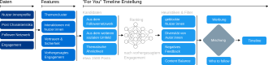

Vorlesung 4: Empfehlungssystem von X (Twitter)


Social Media
- Große Teile der Bevölkerung in der EU nutzen Social Media.
- Bei den 16-24 Jährigen liegt der Anteil schon bei 74%.
- Auf einer Plattform wie X (früher "Twitter") werden täglich etwa 500 mio Posts erstellt.
- Ein:e typische:r Nutzer:in sieht davon aber nur ein paar hundert.
- → Alle großen Social Media Plattformen haben komplexe Empfehlungssysteme.

Quelle: Landgeist.com.
Das Emfehlungssystem von Twitter
Das Empfehlungssystem muss drei Aufgaben erledigen:
- Posts auswählen, die Nutzer:innen gefallen.
- Posts in einer Timeline anordnen – die "besten" zuerst.
- Illegale Inhalte entdeckeni und aus den Timelines der Nutzer:innen heraushalten...
Es kann dafür vier Informationsquellen nutzen:
- Informationen über Nutzer:innen wie das Profil und angegebene Interessen.
- Informationen über Posts wie Thema, multimediale Inhalte und Emotionalität.
- Informationen über die Community wie welchen anderen Nutzer:innen ein Nutzer folgt, und mit welchen Posts diese Nutzer:innen interagieren.
- Informationen über das Nutzerverhalten wie welche Posts nutzer liken, teilen oder auf sie antworten (engagement) → Optimierungsziel.
Von Daten zu Empfehlungen

- Textdaten werden eingebettet um sie zu Features zu verarbeiten.
- Mit Hilfe der Features wird die Kosinus-Ähnlichkeit zu Content und Nutzer:innen errechnet, mit denen der/die Nutzer:in bereits interagiert hat.
- Für die 1500 ähnlichsten oder "relevantesten" Posts wird mit einem Neuronalen Netz vorhergesagt, wie wahrscheinlich der/die Nutzer:in mit ihnen interagieren wird.
- Nach der Anwendung von Filtern werden die gerankten Posts mit Werbung und follow-Empfehlungen gemischt und als Timeline ausgeliefert.
Probleme mit der Optimierung von Engagement
Stark emotional aufgeladener oder reißerischer Content (clickbait) regt uns auf und führt dazu, dass wir eher mit ihm interagieren. Das führt dazu, dass ...

- ... sich extreme Ansichten schneller und weiter verbreiten [1, 2].
- ... Menschen einander weniger vertrauen und die Polarisierung zunimmt [3].
- ... politische Bildung abnimmt [4].
[1] Lorenz-Spreen et al., A Systematic Review of Worldwide Causal and Correlational Evidence on Digital Media and Democracy, Nat Hum Behav (2021).
[2] Müller & Schwarz, Fanning the Flames of Hate, J Eur Econ Assoc (2023).
[3] Sabatini & Sarracino, Online Social Networks and Trust, Soc Indic Res (2021).
[4] Lee, Connecting Social Media Use with Gaps in Knowledge and Participation in a Protest Context, Asian J Commun, (2019).
Reduktion Gesellschaftlicher Risiken
Providers [...] shall diligently identify [...] any actual or foreseeable negative effects on civic discourse and electoral processes, and public security [...]
Digital Services Act, Article 34


Idee: Neue Empfehlungsalgorithmen die nicht nur Engagement optimieren sondern auch auf andere Charakteristiken achten.
Forschungsprojekt "Designing Social Media Recommendation Algorithms for Societal Good".
Zusammenfassung
- Social Media Plattformen wie X (früher Twitter) nutzen komplexe Empfehlungssysteme die auf Techniken des maschinellen Lernens aufbauen um Content auszuwählen.
- Diese Empfehlungssysteme optimieren das Engagement der Nutzer:innen um ihre Einnahmen durch Werbung zu maximieren.
- Die reine Auswahl von Content um Engagement zu optimieren führt allerdings zu gesellschaftlichen Problemen und mittlerweile auch zu Gesetzen wie dem DSA, die diesen Problemen begegen sollen.
Technische Grundlagen der KI
- Verschiedene Formen des maschinellen Lernens
- Überwachtes Lernen (supervised learning)
- Unüberwachtes Lernen (unsupervised learning)
- Bestärkendes Lernen (reinforcement learning)
- Computational Thinking & mathematische Grundlagen
- Probleme so zerlegen, dass sie von Algorithmen lösbar sind
- Maße für die Performance von Algorithmen
- Maße für die Distanz bzw. Ähnlichkeit von Datenpunkten
- Daten als Grundlage der künstlichen Intelligenz
- Datentypen (Zahlen, Kategorien, Bilder, Text)
- Probleme mit Daten
- Feature engineering und Dimensionsreduktion
- Anwendungen von künstlicher Intelligenz
- Klassifikation, Regression, Clusteranalyse
- Sprachmodelle (LLMs)
- Empfehlungssysteme
Wo funktioniert "KI" (nicht) gut?
- Riesige Fortschritte: Optische Zeichenerkennung, Übersetzung, Bilderkennung, ...
→ Wahrnehmung - Passable Fortschritte: Spam Erkennung, Empfehlung von Inhalten, Erkennung von Hassrede, ...
→ Automatisierung von Entscheidungen - Sehr fragwürdig: Vorhersage von Rückfällen Krimineller, Vorhersage von Terrorismus, Vorhersage von Arbeitsleistung ...
→ Vorhersage sozialer Eigenschaften
Ausblick nächste Vorlesung
Am 15.10. von 15:00 bis 16:45 im HS 10.11.
Erste Vorlesung zu Ethik der Künstlichen Intelligenz
Mit Markus Kneer
Wird nicht gestreamed!
Feedback technische Aspekte der KI
Particify Raum 8583 1410
https://ars.uni-graz.at/p/85831410